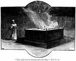

Orílẹ̀-Èdè Ísraẹ́lì
Jákèjádò ìwé Deuterónómì, Ọlọ́run fún àwọn èèyàn Rẹ̀ ní ẹ̀kúnrẹ́rẹ́ ìtọ́ni nípa bí wọ́n ṣe máa gbé nígbà tí wọ́n dé ilẹ̀ Kénáánì, ilẹ̀ tí Ọlọ́run ṣèlérí fún Ábráhámù. Awọn ilana wọnyi paapaa pẹlu iru ijọba ti wọn yoo dasilẹ. Lákọ̀ọ́kọ́, ọ̀wọ́ àwọn onídàájọ́ ni yoo máa ṣàkóso wọn (nípa bẹ́ẹ̀, ìwé Àwọn Onídàájọ́). Lẹ́yìn náà, nínú Deuterónómì 17:14-15 , Ọlọ́run sọ fún àwọn ọmọ Ísraẹ́lì pé àwọn ọba ni ki o máa ṣàkóso àwọn èèyàn, àmọ́ kìkì àwọn ọba tí Ọlọ́run yàn (ẹni àmì òróró) ní pàtó.
Bó tilẹ̀ jẹ́ wipé Ọlọ́run yan Saulù, ọba àkọ́kọ́ ní Ísraẹ́lì, ó jẹ́ aláìgbọràn níkẹyìn, kò sì ní ìgbàgbọ́. Ọlọ́run kò tẹ̀ síwájú láti ṣàkóso Ísraẹ́lì nípasẹ̀ iran Saulù (Ọmọ Saulù kò rọ́pò rẹ̀ gẹ́gẹ́ bí ọba). Gẹ́gẹ́ bí a ṣe rí i nínú apá àkọ́kọ́ ìwé pẹlẹbẹ yìí, oríṣiríṣi ìwé Bíbélì ni a lè fi irú àwọn ìwé ìkẹ́kọ̀ọ́ (irú) tí wọ́n dúró fún. Àwọn ìwé mẹ́jọ àkọ́kọ́, Gẹ́nẹ́sísì dé Rùtù, sọ àwọn ìṣẹ̀lẹ̀ ìtàn ìjímìjí ní ìtòlẹ́sẹẹsẹ ìgbà (ìtòtẹ̀léra bí wọ́n ti ṣẹlẹ̀). Itan orilẹ-ede Israeli ni a sọ lara awọn iwe ti Majẹmu Laelae, ṣugbọn kii ṣe ni sitentẹle. Ki a ba le ni oye ohun ti o sẹlẹ ni kukuna nipa ẹni ti o sẹlẹ si ati’gba ti o sẹlẹ o ye ki a ni iwe atọka (Ọpọ Bibeli ni o ni atọka yi) ti o pese kikọ isẹlẹ ati nibi ti ati le ri wọn ninu Majẹmu Laelae. Eyi ni atẹ kekere ti awọn ọba ti o ṣe ijọba lori Israeli ati nibiti ati le ri awọn itan wọn ninu Majẹmu Lailai:
| Ọjọ | Ọba | Awon iwe Majemu Lailai |
|---|---|---|
| 1050 B.C. (Saaju Kristi) | Saulu | 1 Samueli, 1 Awọn Kronika |
| 1010 B.C. (Saaju Kristi) | Dafidi | II Samueli, 1 Awọn Kronika (Pupọ ninu iwe Orin Dafidi) |
| 970 B.C. (Saaju Kristi) | Solomoni | 1 Awọn Ọba, II Kronika (Orin Solomoni, Oniwaasu, Òwe) |
| 925 B.C - 722 B.C (Saaju Kristi) Israeli pin si ijọba meji |
Ọba pupọ fun Mejeeji | 1 Awọn Ọba, II Awọn Ọba, II Kronika (Òwe) |
Oba Dafidi
Okunrin naa ti yio jẹ ọba ti o kan ati ti yio ga ju, oba israeli wa lati orison ti a ko ka si. Dafidi jẹ ọmọkunrin ti o kere ju fun okunrin (ohun kọ ni agba gegebi iṣe wọn) ti o wa lati ilu jinjin ti a n pe ni Bethlehẹmu. (Ojọọ Orukọ ti a mo bi?) nipase iran Dafidi (iru ọmọ rẹ)ni a o ti bi Jesu.
Gẹgẹbi o ti wa pẹlu awọn iransẹ Ọlọrun tẹlẹ ti O yan lati mu ifẹ rẹ sẹ lori lẹ aye, Dafidi ko jẹ pipe. Ó dá àwọn ẹ̀ṣẹ̀ tó burú jáì nígbà tó jẹ́ ọba. Síbẹ̀, nínú 1 Sámúẹ́lì 13:14 , Ọlọ́run sọ fún wòlíì Sámúẹ́lì pé Dáfídì jẹ́ ènì bi ọkàn Ọlọ́run.
Orílẹ̀-èdè aláìgbọràn kan

Sólómọ́nì, ọmọ Dáfídì, jọba lẹ́yìn rẹ̀. Sólómọ́nì jẹ́ eni mímọ̀ fún jíjẹ́ oníkẹ́kọ̀ọ́ àti ọlọ́gbọ́n. Òun pẹ̀lú ni ọba tí ó ṣamọ̀nà Ísraẹ́lì láti parí kíkọ́ tẹ́mpìlì ọlá ńlá tí bàbá rẹ̀, Dáfídì lóyún làkọ́kọ́. Sólómọ́nì jẹ́ ẹni tí ó kọ àwọn ìwé Májẹ̀mú Láilái méjì: Orin Sólómọ́nì (oriki ìfẹ́!) àti Oníwàásù.
Tí ẹ bá rántí, àṣẹ àkọ́kọ́ tí Ọlọ́run pa fún àwọn ènìyàn Rẹ̀ ni pé wọn kò gbọdọ ní ọlọ́run mìíràn. Ó ṣeni láàánú pé àwọn ẹ̀yà àti orílẹ̀-èdè tí wọ́n ń sìn onírúurú ọlọ́run àti òrìṣà yí Ísraẹ́lì ká. Sólómọ́nì kó ọ̀pọ̀lọpọ̀ àwọn àjèjì wọ̀nyí wá sí Ísraẹ́lì láti ṣèrànwọ́ láti kọ́ tẹ́mpìlì; àwọn òṣìṣẹ́ náà wa pẹlu awọn ère orisa wọn. Gẹ́gẹ́ bí gbogbo wa ṣe mọ̀ nígbèésí ayé wa, ó máa ń ṣòro láti máa wà lọ́dọ̀ àwọn èèyàn tí kò dà bíi tiwa tí ìgbàgbọ́ wọn sì yàtọ̀ sí tiwa, kí wọ́n má sì bẹ̀rẹ̀ sí í gba díẹ̀ lára àwọn ohun tí wọ́n gbà gbọ́ àti àṣà wọn, pàápàá jù lọ bí ìgbàgbọ́ wa kò bá lágbára. Ohun tó ṣẹlẹ̀ sí orílẹ̀-èdè Ísraẹ́lì nìyẹn.
Nígbà tí Sólómọ́nì jẹ́ ọba ńlá ní ọ̀pọ̀lọpọ̀ ọ̀nà, ìṣàkóso rẹ̀ sábà máa ń le. Ó ń gba owó orí tó pọ̀ lọ́wọ́ àwọn èèyàn láti kọ́ tẹ́mpìlì náà, ó sì tún fún ara rẹ̀ ní ààfin olówó ńlá. Èyí, nínú àwọn nǹkan mìíràn, mú kí orílẹ̀-èdè Ísraẹ́lì pín sí ìjọba méjì (Júdà ní gúúsù, Ísraẹ́lì ní àríwá).
Ọlọ́run Rán Ìkìlọ̀ Nípasẹ̀ Àwọn Wòlíì

Ọlọ́run ti yan orílẹ̀-èdè Ísraẹ́lì láti jẹ́ èèyàn Rẹ̀ ( Deuterónómì 7:7-9 ), ṣùgbọ́n léraléra, àwọn Júù máa ń yíjú láti sìn àwọn òrìṣà àwọn èèyàn tó wà láyìíká wọn. Lọ́pọ̀ ìgbà, ìbọ̀rìṣà yìí máa ń wé mọ́ àwọn àṣà bíi fífi ìkókó rúbọ àti ìṣekúṣe tí Ọlọ́run kò fàyè gba àwọn èèyàn Rẹ̀.
Léraléra, Ọlọ́run rán àwọn wòlíì sí àwọn èèyàn náà pé kí wọ́n kìlọ̀ fún wọn pé àbájáde tó burú jáì máa wáyé fún àìgbọràn wọn. Abala ikẹhin ti Majẹmu Lailai ṣakọsilẹ awọn ọrọ ti Ọlọrun mí si awọn woli Rẹ lati sọ. Gbogbo àsọtẹ́lẹ̀ tí Ọlọ́run sọ nípasẹ̀ àwọn wòlíì Rẹ̀ fún ìṣẹ́gun àti ìgbèkùn Ísírẹ́lì ló ṣẹ.
Ki a le ri ni ṣitentẹle kikọ awọn woli, a le ko wọn sinu atẹ bi ti atẹyinwa eyi ti a se fun awọn ọba israeli. Àwọn ìṣẹ̀lẹ̀ tó wáyé ní àkókò 1 àti II Sámúẹ́lì, 1 àti 11Awọn Ọba àti 1 àti II Króníkà gan-an ni àwọn wòlíì gbìyànjú láti kìlọ̀ fún àwọn ọmọ Ísraẹ́lì nípa rẹ̀.
| Ọjọ | Woli | Awon Iwe Majemu Lailai |
|---|---|---|
| 840 B.C. (Saaju Kristi) | Obadiah | I & II Awọn Ọba |
| 835 B.C. (Saaju Kristi) | Joeli | I Awọn Ọba, II Kronika |
| 760 B.C. (Saaju Kristi) | Jona | II Awọn Ọba, II Kronika |
| 740 B.C. (Saaju Kristi) | Amosi | II Awọn Ọba, II Kronika |
| 730 B.C. (Saaju Kristi) | Hosea | II Awọn Ọba, II Kronika |
| 722 B.C. (Saaju Kristi) | --- | Israeli subu si owo Asiria, awon ju lati Ariwa ni igbẹkun |
| 705 B.C. (Saaju Kristi) | Mika, Isaiah | II Awọn Ọba, II Kronika |
| 620 B.C. (Saaju Kristi) | Nahumu, Sefaniah | II Awọn Ọba, II Kronika |
| 640 B.C. (Saaju Kristi) | Habakuku | II Awọn Ọba, II Kronika |
| 605 B.C. (Saaju Kristi) | Jeremiah | Ẹkun Jeremiah (ti a ko ninu igbẹkun) |
| 600 B.C. (Saaju Kristi) | Obadiah | 2 Ọba, 2 Kronika |
| 590 B.C. (Saaju Kristi) | Ẹsekieli, Daniẹli | Ẹkun Jeremiah (ti a ko ninu igbẹkun) |
| 538 B.C. (Saaju Kristi) | Hagai, Sakaraya | Esther, Ezra, Nehemiah |
| 450 B.C. (Saaju Kristi) | Malaki | Esther, Ezra, Nehemiah |
Orílẹ̀-èdè Tí Wọ́n Ṣẹ́gun
Bó tilẹ̀ jẹ́ pé wọ́n gba àwọn ọmọ Ísraẹ́lì láyè láti padà sí ìlú ìbílẹ̀ wọn lẹ́yìn nǹkan bí àádọ́ta ọdún tí wọ́n ti wà nígbèkùn, àwọn tó lọ kò ju àṣẹ́kù àwọn Júù. Ọjọ́ ògo Ísraẹ́lì ti dópin: a ti kó tẹ́mpìlì náà jẹ́, a sì ti pa á run, wọn kò sì ní ṣe àkóso ara wọn mọ́. Ilẹ̀ wọn yóò wà lábẹ́ ìṣàkóso ilẹ̀ ọba kan tàbí òmíràn títí di 1948, nígbà tí a dá orílẹ̀-èdè tuntun ti Ísraẹ́lì sílẹ̀ lẹ́yìn Ogun Àgbáyé Kejì.
Awọn iwe mẹta ti o kẹhin ti Majẹmu Lailai, Hagai, Sekariah ati Malaki, ni a kọ lati gba awọn eniyan Juu ni iyanju lẹhin igbekun wọn lati sọji igbagbọ wọn atijọ ninu Ọlọrun ati lati tun di oloootitọ ninu ijọsin wọn ninu Rẹ (ẹsin Juu).

Lẹhin awọn ibẹrẹ eke meji, wọn paapaa ni anfani lati kọ tẹmpili titun kan. Òjìji tẹ́mpìlì akọkọ ti o ni ògo ti wọ́n kọ́ lábẹ́ Ọba Sólómọ́nì ni; Síbẹ̀, ó jẹ́ ibì kan ní ilẹ̀ ìbílẹ̀ wọn níbi tí wọ́n ti lè tún jọ́sìn Ọlọ́run tòótọ́ kan ṣoṣo náà níkẹyìn.
Àti pé, àní gẹ́gẹ́ bí àwọn wòlíì ṣe ń sọ àsọtẹ́lẹ̀ ìṣubú Ísraẹ́lì, àwọn àsọtẹ́lẹ̀ wọn dà pọ̀ mọ́ àwọn àsọtẹ́lẹ̀ nípa Olùgbàlà kan, Mèssiah kan, tí yóò wá dá májẹ̀mú tuntun láàárín Ọlọ́run àti àwọn ènìyàn Rẹ̀. (Isaiah 53, 55 ) Ọlọ́run ní káwọn èèyàn tí wọ́n ṣẹ́gun ní ìgbàgbọ́ pé, kódà nígbà táwọn nǹkan bá dà bíi pé wọ́n burú jù lọ, ọjọ́ ọ̀la ṣì wà lọ́wọ́ Rẹ̀, àti pé Ó ṣì ń wù ú láti ní àjọṣe pẹ̀lú aráyé, ìṣẹ̀dá re ti ó ga jù lọ.

Akoko Ṣaaju ati Lẹhin Jesu
Gbogbo itan ti pin si ipa meji: ṣaaju ki a to bi Jesu ati lẹhin naa. Odun lori kalẹnda wa jẹ iye awọn ọdun lati’gba ti a ti bi Jesu.
Bayi a samisi awọn ọjọ ti Majẹmu Lailai ati ni iṣaaju pẹlu yiyan BC eyiti o duro fun “Ṣaaju Kristi.” Awọn ọjọ lẹhin ti a bi Jesu jẹ apẹrẹ pẹlu "AD," eyiti o jẹ kukuru fun gbolohun Latin "Anno Domini," ti o tumọ si "Ni ọdun Oluwa wa."
Awọn eniyan kan wa, awọn ti ko gbagbọ pe Jesu ni Messiah, Ọmọ Ọlọrun, ti yoo fẹ lati mu u kuro ninu eto kalenda wa. Wọ́n ti bẹ̀rẹ̀ sí í lo orúkọ “BCE,” èyí tó dúró fún “Ṣáájú akoko ti o wọpọ.” Ṣugbọn “akoko ti o wọpọ wa” wa ni asọye nipasẹ otitọ akoko Jesu lori ilẹ, nitorinaa gbogbo rẹ tumọ si ohun kanna! Gẹ́gẹ́ bí a ti sọ ṣáájú, gbogbo ìtàn ti pín sí ipá méjì: kí a tó bí Jésù àti lẹ́yìn náà.
Ẹ̀sìn àwọn Júù (Ìjọsìn Ọlọ́run) Lẹ́yìn ígbèkùn
Ìjọsìn àwọn Júù máa ń jẹ́ fífi ẹran rúbọ sí Ọlọ́run fún ìdáríjì ẹ̀ṣẹ̀ wọn. Ǹjẹ́ o rántí pé Ọlọ́run sọ fún Ádámù àti Éfà pé wọn yio kú fún ẹ̀ṣẹ̀ wọn? Fún àwọn Júù, fífi ẹran rúbọ sí Ọlọ́run, gẹ́gẹ́ bí Ó ti pàṣẹ fún wọn láti ṣe, jẹ́ ìṣàpẹẹrẹ pàṣípààrọ̀ ìrúbọ ẹmi fún ẹ̀ṣẹ̀ wọn.
When the Jews returned to Israel after their exile, we said that the prophets encouraged the people to begin worshiping God and obeying all of His commandments again.
Nígbà tí àwọn Júù padà sí Ísraẹ́lì lẹ́yìn ìgbèkùn wọn, a sọ pé àwọn wòlíì rọ àwọn ènìyàn náà láti bẹ̀rẹ̀ sí ni sìn Ọlọ́run kí wọ́n sì tún pa gbogbo òfin Rẹ̀ mọ́.
Ó dà bíi pé àwọn Júù (ó kéré tán àwọn díẹ̀ tó padà sí Ísraẹ́lì) ti paada kẹ́kọ̀ọ́ lara awọn asise wọn. Ọlọ́run kò ní fàyè gba ìbọ̀rìṣà àti àìgbọràn. Àwọn àlùfáà Júù, tí wọ́n dìde láti ṣàkóso àwọn Júù gẹ́gẹ́ bí àbájáde àdánidá ti aṣáájú ẹ̀sìn wọn, ṣèrànwọ́ láti dá àwùjọ kan tí wọ́n pinnu láti jẹ́ olóòótọ́: wọn kì yóò jẹ́ kí àwọn àṣà ìbílẹ̀ nípa lórí wọn, wọn yóò sì sa gbogbo ipá wọn láti ṣègbọràn gan-an. si gbogbo awọn ofin Ọlọrun. Èyí ni àwùjọ tí a bí Jésù, Mèssiah náà sí.
Lábẹ́ májẹ̀mú àtijọ́, Ọlọ́run ti ṣèlérí ìlera àti ọọró fún àwọn wọnnì tí wọ́n ṣègbọràn sí àwọn òfin Rẹ̀. Orílẹ̀-èdè Ísraẹ́lì ti di alágbára àti ọlọ́rọ̀ nígbà tí wọ́n gbẹ́kẹ̀ lé Ọlọ́run. Ohun ti awọn Ju ti o pada si Israeli ko mọ ni pe, pẹlu isubu Israeli, majẹmu atijọ ko ṣiṣẹ mọ.
Awọn ọkunrin ati awọn obinrin nla ti Majẹmu Lailai
A ti sọrọ nipa igba pipẹ ni awọn oju-iwe diẹ, ṣugbọn Bibeli kun fun awọn itan ti awọn ọkunrin ati awọn obinrin nla ti Ọlọrun. O yẹ ki o mọ wọn! Eyi ni lati bẹrẹ pẹlu; Bó o ṣe bẹ̀rẹ̀ sí í kẹ́kọ̀ọ́ Bíbélì, ó dájú pé wàá rí ọ̀pọ̀lọpọ̀ èèyàn miran ninu won. Kilode ti o ko bẹrẹ pẹlu awọn wọnyi; nígbà náà, bí àkókò ti ń lọ tí o sì ń ka síwájú sí i, o lè ṣàfikún tirẹ̀ niti “Àwọn eni ńlá Bibeli”! Rii daju lati samisi awọn ori ati awọn ẹsẹ nigbati o ba rii wọn ki o le wa wọn nigbakugba ti o ba fẹ!
| Jósẹfu | Gídẹóni | Ẹstẹri |
|---|---|---|
| Gẹnẹsisi 37, 39-47 | Onídàájọ 6-8 | Ẹstẹri 1-9 |
| Elíja: 1 Awọn Ọba 17-18 | Míríámù: Ẹksodu 1-2:10 | Sámísóni: Onídàájọ 13-15 |
| Elíṣa: 2 Awọn Ọba 2, 4-8:15 | Ráhábù: Jósúà 2 | Dẹbọráh: Awọn Onídàájọ 4-5 |
Ẹ Jẹ ká Bẹrẹ!
Ki o to tẹsiwaju, isinyin le jẹ akoko ti o dara lati wo diẹ ninu awọn ayoka ti o wa loke tabi eyikeyi ninu awọn ẹsẹ ti a ti fun yin saaju. Yoo jẹ ikọni nla fun kikọ ẹkọ lati wo awọn itọkasi “ori ati ẹsẹ”.